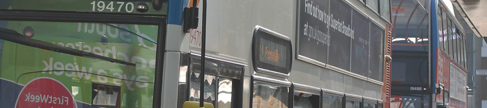

Travel Preperation
Travel Guide
Getting to university can be a challenge, as you are in your first year you may not have a direct route for coming to the campus. We will help you find the best route for your journey and make sure you get to your lectures on time! When travelling to the MMU All-Saints campus there are three ways our students get here. The first being by bus, this is the most common way the students at this campus get to here.
To get here by bus from Piccadilly you can get multiple buses from the Piccadilly gardens in the center of Piccadilly. The numerous buses you can get are the 41 42 43 85 111 250 and 256 all these buses will drop you directly outside Victoria Park. In addition, when travelling home the buses are very frequent; on avenge 1-4 buses come every 4minutes to the four different buses stops in front of Victoria Park by the library.
Train
The second most common way to get to our campus is by Train. The three Rail way stations Oxford, Piccadilly and Victoria all have routes to the campus that take no more than 10mins walking distance should you use this type of travel.
Manchester Oxford Road Rail Station – It’s just a five-minute walk away from the campus. Turn right out of Oxford Road Station and walk underneath the railway bridge. The Manchester campus is to your right.
Manchester Piccadilly Railway Station – Follow the signs for Fairfield Street taxi ranks and take the 147 bus to Oxford Road/All Saints. The bus runs every 10-15 minutes. You can also walk, which takes 10-15 minutes.
Manchester Victoria Railway Station – Follow the signs for the free metro shuttle bus service 2 (green). Get off at Chester Street and walk up to Oxford Road and turn right. The metro shuttle service runs every 10 minutes.
Metrolink
Finally the Metrolink is our third popular way of getting to the campus, which is based, at St.Peter’s Square, this Metrolink stop is 10 minutes walk from the campus. To get here by this way you will need to walk down Oxford road/street, past the palace theater and then the oxford road railway station, the campus is on your right. Can’t miss it!